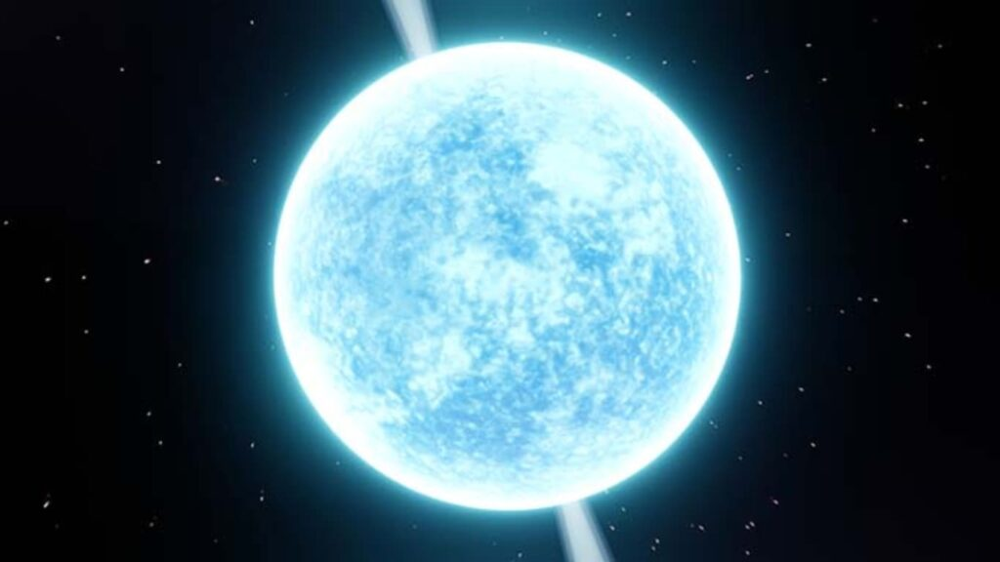
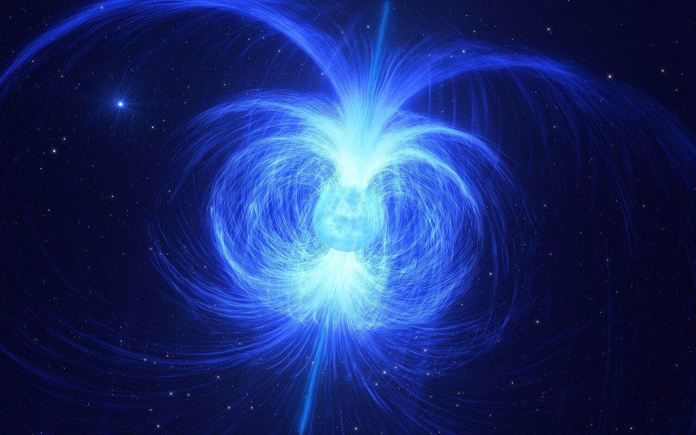

Estrellas de Neutrones: Los Cadáveres Cósmicos Extremos
Las estrellas de neutrones son uno de los objetos más fascinantes y extremos del universo, remanentes del colapso de estrellas masivas.
Formación: Cuando una estrella con una masa entre 8 y 20 veces la del Sol agota su combustible nuclear, su núcleo colapsa bajo su propia gravedad. La presión es tan inmensa que los protones y electrones se fusionan para formar neutrones. Las capas exteriores de la estrella son expulsadas en una violenta explosión de supernova, mientras que el núcleo ultradenso de neutrones permanece: una estrella de neutrones.
Propiedades Extremas:
Densidad Inimaginable:Una estrella de neutrones comprime una masa superior a la del Sol en una esfera de solo unos 20 kilómetros de diámetro. Una cucharadita de su material pesaría miles de millones de toneladas en la Tierra.
Gravedad Intensa:La gravedad en su superficie es miles de millones de veces más fuerte que la de la Tierra.
Rotación Vertiginosa:Debido a la conservación del momento angular durante el colapso, las estrellas de neutrones giran a velocidades increíbles, a veces cientos de veces por segundo.
Púlsares y Magnetars:
Púlsares: Muchas estrellas de neutrones emiten haces de radiación desde sus polos magnéticos. A medida que la estrella gira, estos haces barren el espacio como un faro cósmico. Si uno de estos haces apunta hacia la Tierra, observamos pulsos de radiación a intervalos regulares. A estas estrellas de neutrones las llamamos púlsares.

Magnetars: Son un tipo especial de estrella de neutrones con campos magnéticos extraordinariamente potentes, miles de billones de veces más fuertes que el de la Tierra. Estos campos magnéticos son tan intensos que pueden causar "terremotos estelares" en la superficie de la estrella, liberando enormes estallidos de rayos gamma y rayos X. Son los imanes más potentes conocidos en el universo.

.jpeg)